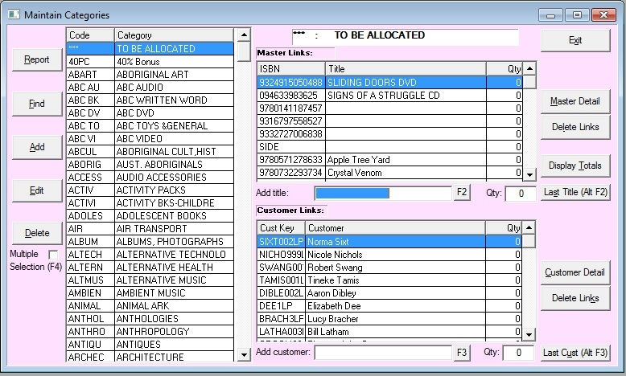

Using the Category Menu
From the main menu click on Tables, then click on Categories.
This opens the Maintain Categories window, displaying a list of all the categories on the system.
The window is split into 3 browsers: Categories, Master Links and Customers Links.

Categories
This is located on the left side of the window and has displayed the listing of all Categories within the system in alphabetical order. The categories Code and name are displayed in the browser. To the left side of this are the buttons to manipulate the categories when clicked, these are:
Report
Print a list of all categories in alphabetical order.
Find
Search for a category either by category code (fast search) or by name.
Then click OK.
Add
To add a category link. When prompted enter:
Name: Category name
New Code: Category Code (max. six digits).
Then click OK.
Edit
Globally manipulating categories.
Double clicking on the category's line in the browser will also allow editing.
Delete
To delete a category that is selected (one at a time).
Master Links
This section of the window displays in its browser the titles linked to the selected category on the left side of the window.
In the browser only the item ISBN and Title are displayed.
The buttons to manipulate title links are:
Master Detail
To display the Title Master detail of the selected title
Double clicking on a Title in the browser will also display its details.
Add Link
To add a link to a title either scan its barcode in the ISBN field when the Add Master Link window displays or click to search for the title (Add link for searching using the button it shows)
Delete Link
This will delete a link to any of the title links displayed
Highlight the title you wish to remove.
You can select more than one customer by holding down the Control (Ctrl) button and clicking on titles.
You can select a range of titles by clicking on the first title you require. Then holding down the Shift button, click the last title in your range.
Click on the Delete Link button
Click OK.
Customer Links
This section of the window located at the lower right side displays in its browser customers linked to the selected category on the left side of the window. The Customer browser only displays the Customer Key and customers full name ( Customer ).
The buttons to manipulate Customer links are:
Customer Detail
To display the customers details from the Customer Master
Double clicking on the line will also do this.
Add Link
To link a customer to the category click the Add Link buttin and select a customer from the pop up window that opens.
Delete Link
To remove a customer from a category.
Select the customer you wish to remove.
You can select more than one customer by holding down the Control (Ctrl) button and clicking on the customers you require.
You can select a range of customers by clicking on the first customer you require.
Then, holding down the Shift button, click the last customer in your range.
Click on the Delete Link button
Click OK.
Exit
To exit the categories master
Note: Titles can also be assigned to or removed from categories in the Title Master'sDetail tab.